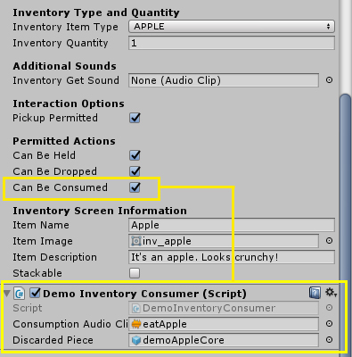
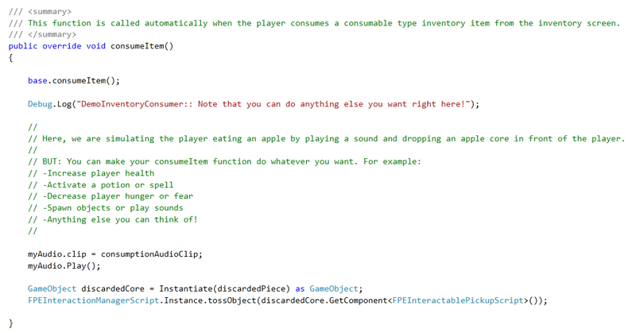

The FPEInteractableInventoryItemScript component provides the means to create Inventory Items that the player can collect and use in a variety of ways.
Inventory Items are similar to Pickup items, but they have some special properties. Most notably, they can be stored in inventory, then later retrieved by the player for interactions like unlocking doors, solving puzzles, etc.
The included FPEGameMenu has an Items tab, which shows how you can display and interact with stored inventory items. Clicking on an item in the inventory screen will display its actions.
| Inventory Item Type | The type you created in the eInventoryItems enum above (e.g. APPLE, MY_CUSTOM_INV_A, etc.) |
| Inventory Quantity | The number of the type to give the player when they store this inventory item. For example, a Battery prefab might have a quantity of 1 of type BATTERY, while a BoxOfBandages prefab might have a quantity of 12 of type BANDAGE. |
| Inventory Get Sound (Optional) | If specified, this sound will override the default inventory get sound. |
| Can Be Held | If true, the player can take this item out of their inventory and hold it in their hand. |
| Can Be Dropped | If true, the player can drop this item from their inventory. |
| Can Be Consumed | If true, the player can consume this inventory item. This requires an Inventory Consumer |
| Item Name | The friendly display name of the item. E.g. demoApple has an Item Name of 'Apple' |
| Item Image | The image shown in the inventory screen along with Name and Description. Refer to "inventoryItemImageTemplate.psd" Photoshop template inside the FirstPersonExplorationKit/Textures/Templates/ folder. You can create consistent images using the provided InventoryImageCapture.unity Scene file in the FirstPersonExplorationKit/Scenes/Utility/ folder. |
| Item Description | The long form description of the item. E.g. demoApple description is 'It's an apple. Looks crunchy!' |
| Stackable | If true, the item will be stacked inside the player's inventory. This means that the player can have more than one of this item and it will only take up one slot. The true quantity will be displayed in the top right (e.g. 5 items will have a label of 'x5') |
Inventory Consumers (FPEInventoryConsumer), such as the included DemoInventoryConsumer, are scripts that make things happen when the associated inventory item is consumed. For example, the demoApple prefab, or inventory type APPLE, uses the DemoInventoryConsumer, which is assigned as a component in the Inspector:
All Inventory Consumers must implement and override the consumeItem() function, with a call to base.consumeItem() as shown below.
When your inventory item is consumed, the consumer functionality kicks in and the consumeItem() function is ultimately called, resulting in the execution of your custom consumer code.